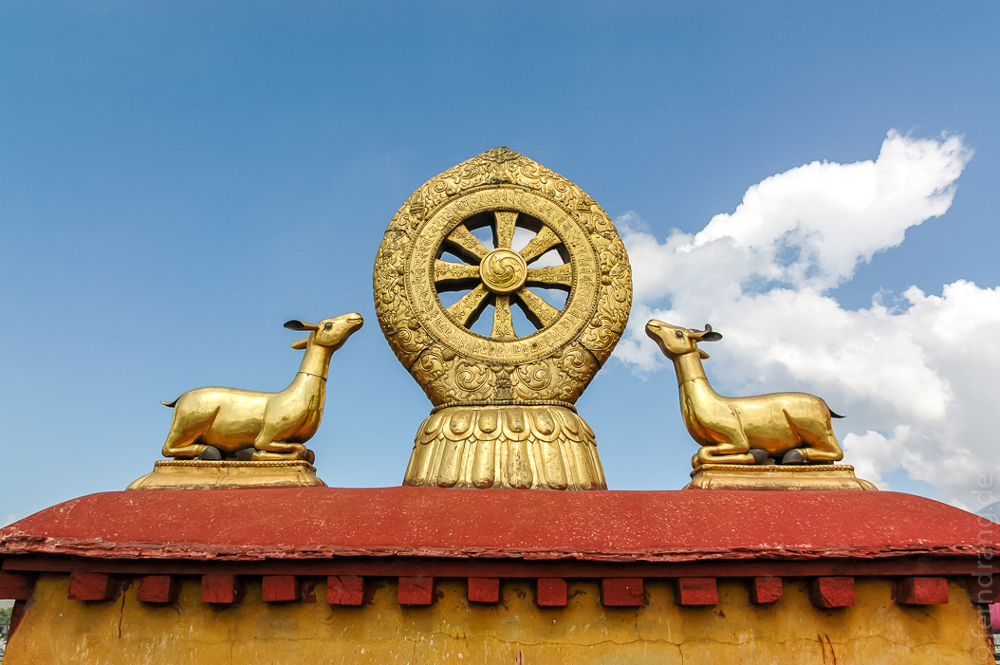
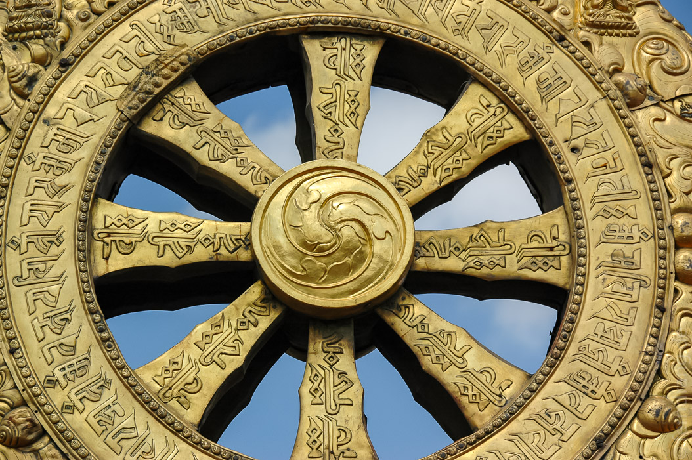
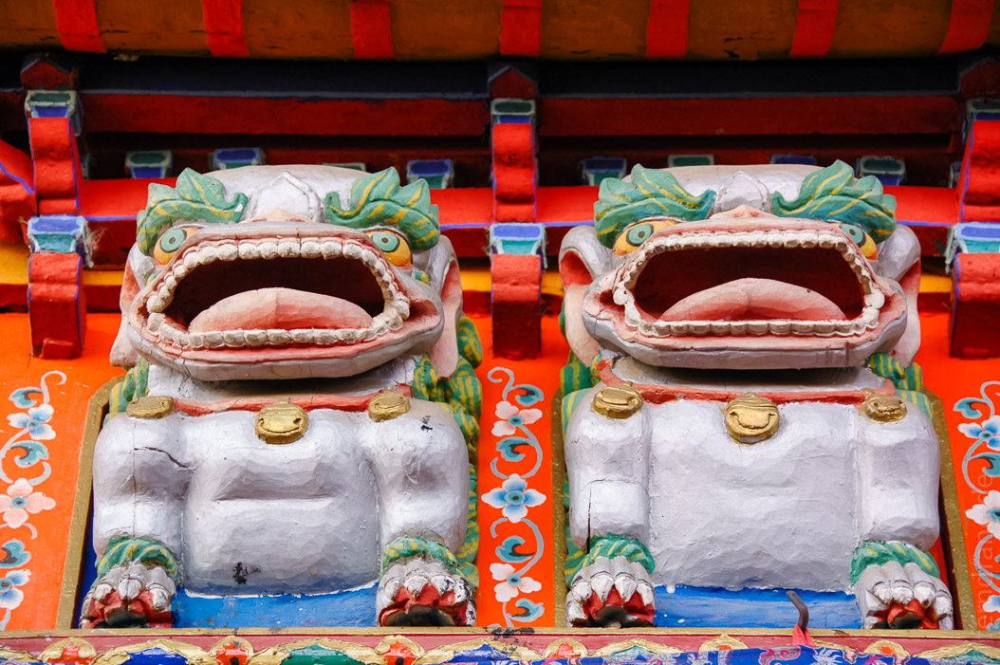
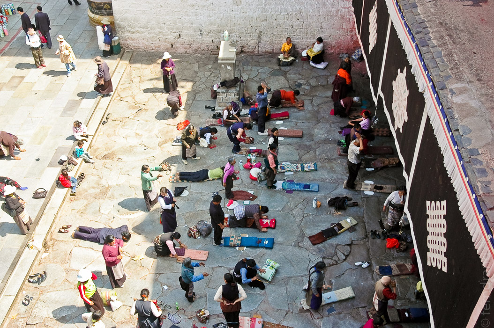
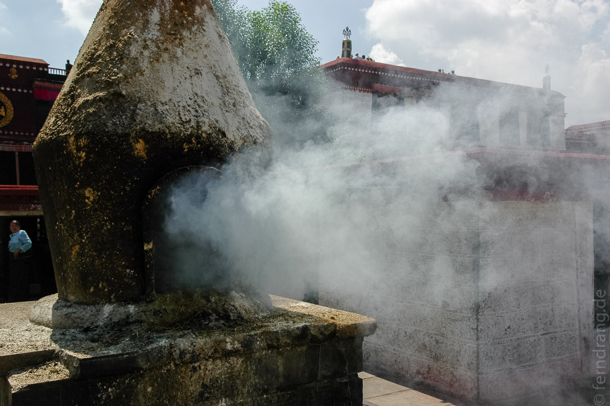
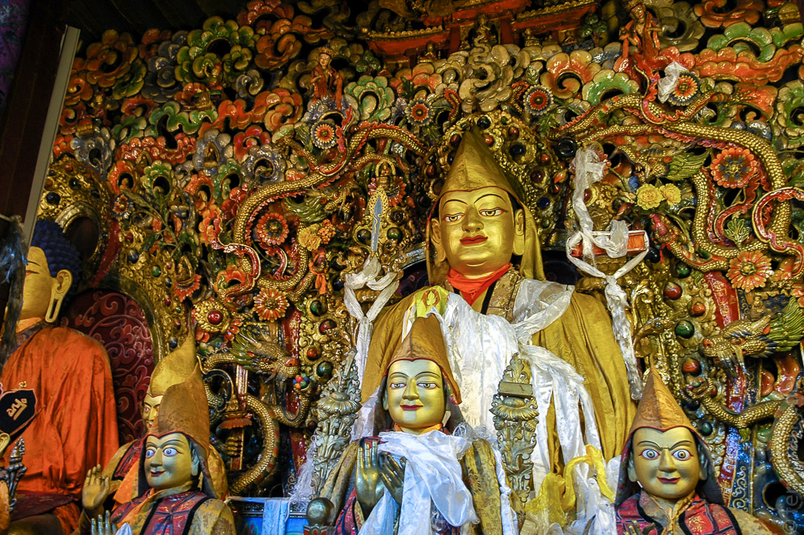
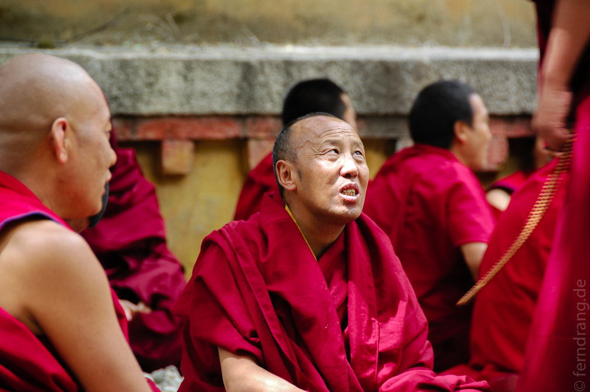
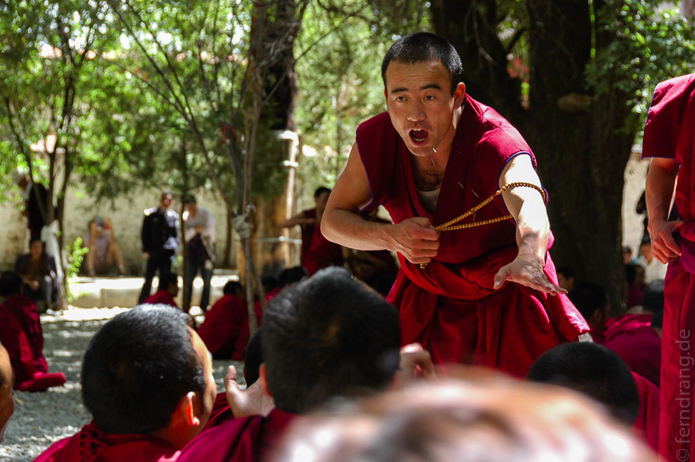

Nur ein paar Meter von unserem empfehlenswerten Hotel ("Dhood Gu", übrigens) liegt der Jokhang-Tempel. Im siebten Jahrhundert erbaut gilt er als der älteste und heiligste buddhistische Tempel in Tibet. Um seine Entstehung ranken sich entsprechende Mythen.
  Auch hier war leider sehr viel Betrieb. Wobei es hier weniger chinesischen Touristen waren, als die tibetischen Pilger, die sich in einer ununterbrochenen Kette durch alle Kapellen des Tempels schieben. Alle Tibeter müssen mal hier hin gepilgert sein. Fromme "messen" dabei zuerst den Barkhor, eine Ringstraße, die um den Tempel herumführt, mit ihrem Körper der Länge nach aus. (Hand- und Knieschoner aus Stofffetzen sind erlaubt). Noch Frommere verneigen sich dabei zum Tempel hin, so dass sie den Weg ihrer Breite nach vermessen. Wir konnten beide Varianten bewundern.
Der Eingang des Tempels ist auch von sich Niederwerfenden belagert. Im Inneren gibt es unzählige Kapellen mit Figuren von den zahlreichen Formen Buddhas und Lamas. Als Höhepunkt gilt eine große Statue Sakyamunis, von der es eine chinesische und eine nepalesische Variante gab, um die sich eine endlose Verwechslungsgeschichte rankt. 
Vom Dach des Jokhang aus hat man einen schönen Blick auf den Potala. Die Pilger bringen hier solche Mengen an flüssiger Jak-Butter für die Butterlämpchen her, dass auf dem Vorplatz eigens ein Haus errichtet wurde, um die Kerzen abzubrennen.
Am Nachmittag sind wir zum Sera-Kloster gefahren, das mit der Zeit ebenfalls von Lhasa umflossen wurde. In dieser wichtigen Klosterschule der Gelugpas gibt es einen hoch verehrten Pferdekopf-Buddha. In einem Schrein, der selbstverständlich zuerst im Uhrzeigersinn umgangen werden muss, befindet sich die Buddha-Statue, der ein Pferdekopf mit einem fröhlichen Grinsen aus dem Kopf wächst. Darunter lagert ein Haufen Gebetsschals, in die die Pilger ihren Kopf stecken. Einigen konnte es dabei nicht schnell genug gehen, so dass in dem engen Gang großes Gedränge herrschte. 
An die Klosterschule angeschlossen ist ein hübscher, schattiger Hof, auf dem die Mönche nachmittags über philosophische Themen debattieren. Dabei halten sie sich an einen seltsamen Ritus. In einem Kreis sitzender Mönche stehen ein oder mehrere Mönche und schreien Fragen oder Antworten (wer weiß) heraus. Dabei machen sie ausladende Bewegungen, als wollte sie sich prügeln, reißen an ihren Gebetsketten und Beenden ihre Sätze mit lautstarkem Händeklatschen. Gerade bei den jüngeren Mönchen arten die Debatten oft in fröhliches Geschubse und Handgemenge aus. Ob sie in diesem Geschrei und Gepolter wirklich ihre philosophischen Fähigkeiten schärfen bleibt fraglich.
 Abends hat unser Führer uns zu einem tibetischen Essen abgeholt. Diesmal haben wir Momos probiert, die stark an Maultaschen erinnern und gedünstet oder gebraten werden. Dazu haben wir eine neue Lieblingsspeise entdeckt: Yak-Salat. Fein geschnittene, gebratene Scheiben Yak-Fleisch werden mit frischen Tomaten, Zwiebeln, Unmengen an Knoblauch und, wie fast alles in der tibetischen Küche, mit frischem Korriander vermengt. Das Ganze wird kalt und so scharf gegessen, dass man zwischen Genuss und Schmerz hin- und hergerissen ist. Dazu wurde uns das berühmte tibetische Gerstenbier Tschang in der dritten Braustufe vorgesetzt. Die ersten beiden Stufen seien für uns zu stark…